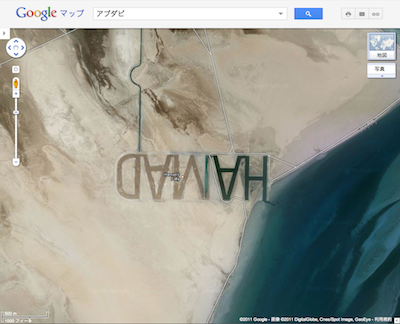

アラブの大富豪、宇宙から読めるよう砂浜に自分の名前を刻む 34
ストーリー by hylom
オカエリナサイ的 部門より
オカエリナサイ的 部門より
capra 曰く、
アラブの首長が、宇宙からでも読めるような大きさでアブダビの砂浜に自分の名前を刻んだそうだ（Daily Mail、本家/.）。
子供の頃、砂浜に自分の名前を書いたことのある/.Jerはたくさんいるだろうが、もっと大規模にこれを夢見たアブダビの首長Hamad Bin Hamdan Al Ahyan氏は人を雇い、何週間もかけて自分の名前「HAMAD」を刻ませたとのこと。かかった費用は明らかにされていないが、アラブの大富豪とあれば痛くも痒くもない金額であろう。縦1km、幅3.2kmに渡り島の砂浜に深く刻まれたその文字はGoogle Earthの衛星写真からもしっかり確認でき、海の満ち引きによってかき消されるどころか、一種の水路としてその潮を受け止めているとのことだ。
なお、この首長は過去にもベッドルームを4つ備えた、ダッジ社のトラック「Power Wagon」の8倍の大きさという世界最大のトラックも作ったことがあるという。
この「HAMAD」の文字はGoogle Mapの航空写真でも確認できる（「HAMAD」の文字が描かれたAl futaysi島）。Google Mapではこの場所に「Hamad's folly」（Hamadの愚行）という名称が付けられている。

企業もまねして (スコア:2)
ロゴを描いたり、QRコードを書いたりすれは、良い宣伝になるんじゃないでしょうか。
GoogleMapがQRコードを認識してクリッカブルなリンクにしてくれれば便利そう。